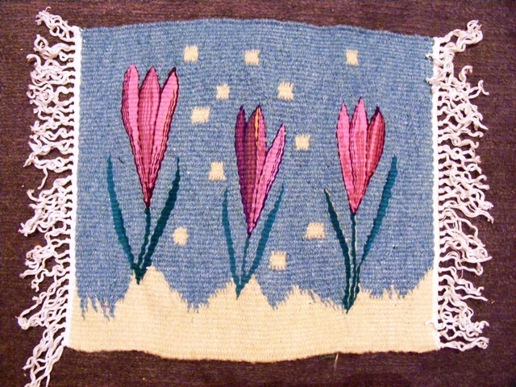

Crocuses
Crocus (English plural: crocuses or croci) is a genus of flowering plants in the iris family comprising 90 species of perennials growing from corms. Many are cultivated for their flowers appearing in autumn, winter, or spring. The spice saffron is obtained from the stigmas of Crocus sativus, an autumn-blooming species. Crocuses are native to woodland, scrub, and meadows from sea level to alpine tundra in central and southern Europe, in particular Krokos, Greece[2], on the islands of the Aegean, North Africa and the Middle East, and across Central Asia to Xinjiang Province in western China.
Cultivation and harvesting of Crocus sativus for saffron was first documented in the Mediterranean, notably on the island of Crete. Frescos showing them are found at the Knossos site on Crete,[9] as well as from the comparably aged Akrotiri site on Santorini.